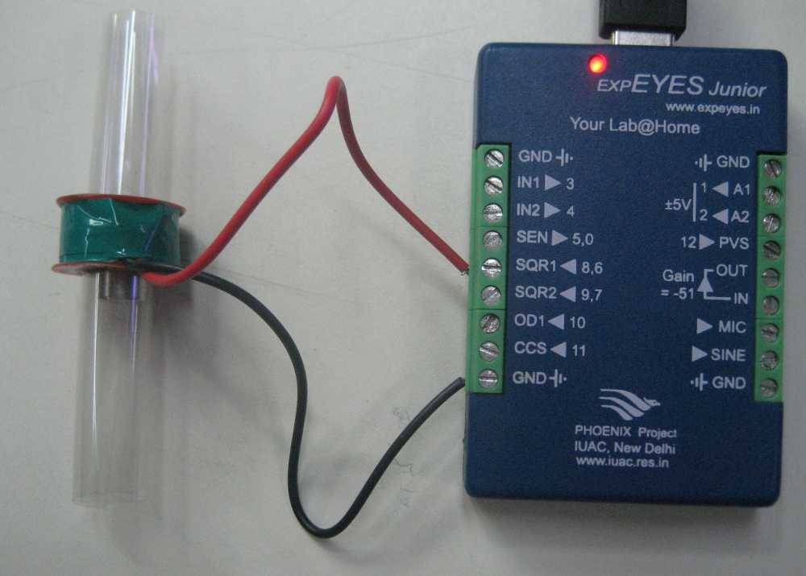

The force experienced by a current carrying conducter placed in a magnetic field is demonstrated by placing a permanent magnet inside a solenoid and applying an AC signal to it. The magnet moves back and forth up to a frequency of around 2000 Hz and a humming sound is produced. The working principle is same as that of a loudspeaker, where the magnet is fixed and the coil moves along with the paper cone.
